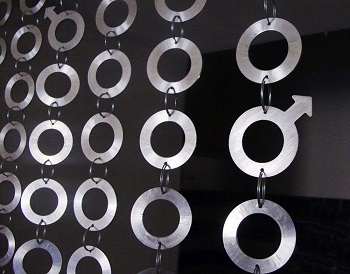

Jak Pracujeme
Těžištěm naší práce je především výtvarné pojednání prostoru.
Veškeré interiéry, na kterých jsme doposud pracovaly, bylo ale nutné zrekonstruovat celkově. Máme zkušenosti a jsme obklopeny týmem šikovných a prověřených řemeslníků a to i z různých oborů uměleckých řemesel.

Zajistíme tyto práce:
instalatérské • elektrikářské • topenářské • podlahářské • obkladačské • truhlářské • malířské a tapetářské • štukatérské • pasířské ... a další
Děláme osobně speciální, velmi efektní strukturované omítky, práci na nich bychom nikomu jinému nesvěřily. Používáme kvalitní barvy a lazury. Máme dlouholeté zkušenosti s prací s kovy a to i ve větším měřítku.
Zakládáme si na precizně provedených detailech.
Negativa daného prostoru potlačíme a zdůrazníme jeho pozitivní stránky – vždy se z mínusu snažíme udělat plus, je to pro nás výzva!
V našem pojetí může být interiér něžně romantický ("budoir mladé dámy"), okořeněný hravými detaily ("single byt mladého muže") - detaily kovového závěsu a námi zpracovaný polystyrénový obal od WC mísy nad vchodem na toaletu – jakkoliv podle vašeho založení.
Velmi důležité je pro nás souznění s klientem, bez něj si spolupráci nedovedeme představit
První konzultace je zdarma, mimo cestovného.
Podrobně rozebereme vaše přání a požadavky, seznámíme se s prostorem a zjistíme, jaké barvy, tvary a materiály milujete. Pomůže nám, když se dozvíme něco o vašich zájmech a koníčcích...
Také je potřeba, abyste nám prozradili, jaké finanční prostředky máte k dispozici. Během druhé schůzky vám sdělíme, co všechno je možno v rámci rozpočtu uskutečnit a ukážeme vám naše návrhy. Předložíme vám ke schválení vzorky materiálů, vybrané odstíny barev ve vzornících, a pod.
Vše budeme s vámi průběžně konzultovat.
A věřte: KRÁSNÝ INTERIÉR NEMUSÍ BÝT DRAHÝ